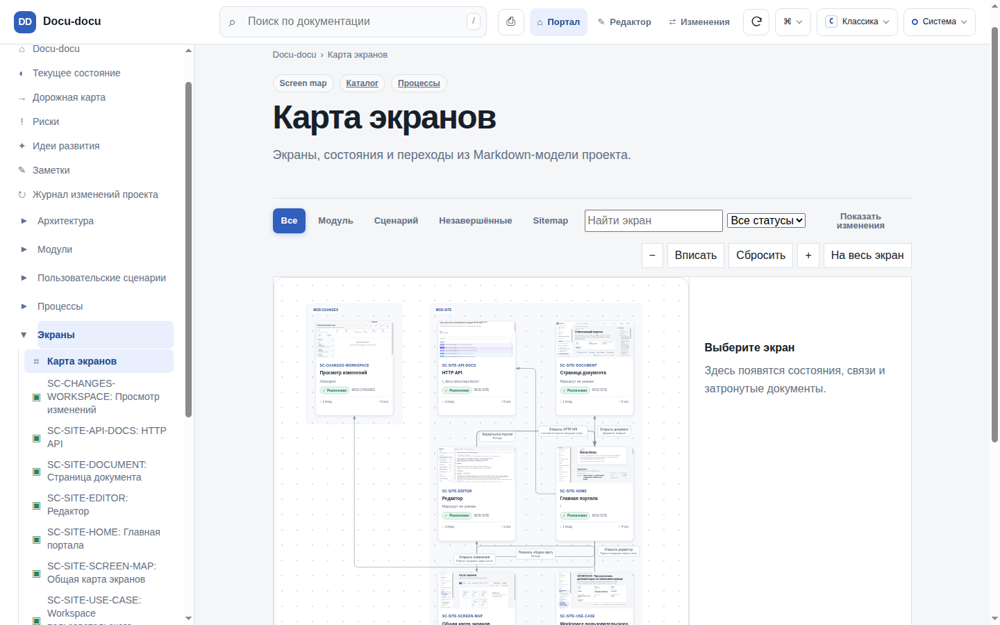
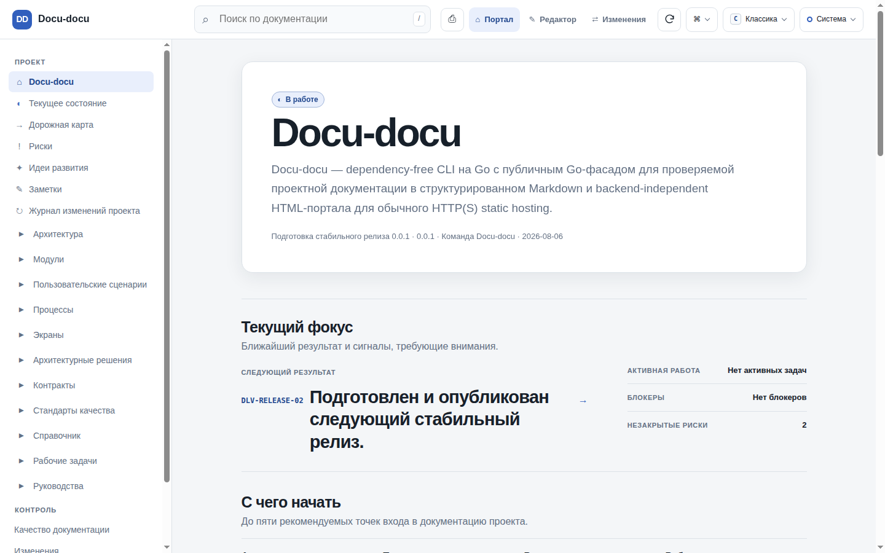
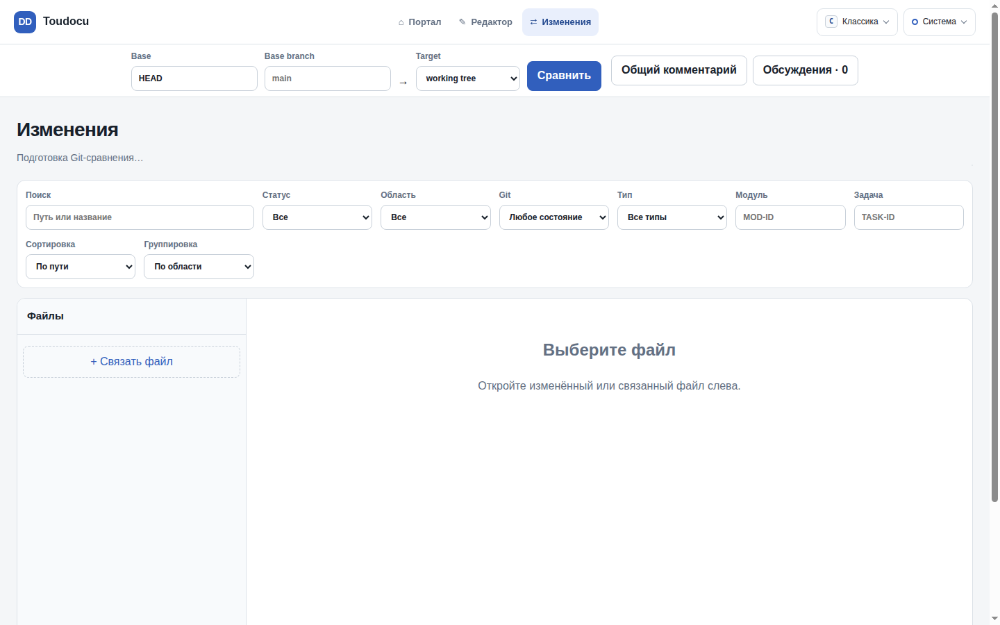

ДЛЯ ИНЖЕНЕРОВ
Находите архитектуру, требования и задачи в том же репозитории, где лежит код.
MARKDOWN · GIT · NODE.JS
Проверяйте и редактируйте Markdown, разбирайте изменения в Git и передавайте задачи агенту. Всё в локальном портале.
toudocu check ./docstoudocu serve ./docstoudocu build ./docs --output ./siteДЛЯ ИНЖЕНЕРОВ
Находите архитектуру, требования и задачи в том же репозитории, где лежит код.
ДЛЯ АВТОРОВ ДОКУМЕНТАЦИИ
Правьте Markdown в браузере, проверяйте ссылки и публикуйте документацию.
ДЛЯ АГЕНТОВ
Получайте требования, зависимости и правила для выбранной задачи.
ПРОВЕРКА ДОКУМЕНТАЦИИ
Находите битые ссылки и ошибки в документах перед публикацией. Точность описаний по-прежнему нужно проверять вручную.

ПУБЛИКАЦИЯ
Соберите сайт с поиском и диаграммами для GitHub Pages или другого статического хостинга. Читателям не нужен Toudocu.

КОМАНДЫ CLI
Проверьте документы, соберите сайт для публикации или откройте локальный портал.
toudocu check ./docs --stricttoudocu build ./docs --output ./site --cleantoudocu serve ./docsРЕВЬЮ ИЗМЕНЕНИЙ
Смотрите, что изменилось в тексте и на странице. Оставляйте вопросы к изменённым файлам.

УСТАНОВКА CLI
Скопируйте команду для вашей системы и выполните её в терминале. Для работы нужен Node.js 24 или новее.
curl -fsSL https://github.com/lumenikoly/toudocu/releases/latest/download/install.sh | sh
irm https://github.com/lumenikoly/toudocu/releases/latest/download/install.ps1 | iex
Документы остаются файлами в Git. Toudocu помогает читать, проверять и обновлять их.
Находите ошибки в документах и ссылках. Запускайте проверку вручную или при сборке проекта.
toudocu check ./docs
Собирайте сайт для чтения с поиском, диаграммами и ссылками между требованиями, задачами и решениями.
toudocu build ./docs
Редактируйте документы прямо в браузере. После сохранения сразу видны результат и найденные ошибки.
toudocu serve ./docs
Сравнивайте текст, диаграммы и API до и после правки. Смотрите, какие задачи затронуты.
toudocu changes ./docs
Смотрите, как связаны экраны приложения. Проходите пользовательские сценарии шаг за шагом.
screens/SC-*.md
Оставляйте вопросы и просьбы о правках рядом с текстом. Попросите агента разобрать их — ответ появится в том же обсуждении.
Обсуждения в локальном портале
Передавайте агенту задачу вместе с требованиями, правилами проекта и шагами проверки.
toudocu task context TASK-ID ./docs
Попросите агента обновить документацию после изменений в коде.
$toudocu refresh diff
Подключите Toudocu к своему агенту по шагам ниже. Уже есть документация? Откройте её командой toudocu serve ./docs.
toudocu skill install --agent codexВ корне проекта подключите навык к Codex. Также поддерживаются Claude Code и GitHub Copilot.
$toudocu initОтправьте это сообщение агенту с навыком. Он изучит репозиторий и создаст документацию.
toudocu check ./docsЗапустите проверку в терминале и прочитайте созданные документы.
toudocu serve ./docsПерейдите по ссылке из терминала. Читайте и редактируйте документы в браузере.
$toudocu refresh diffПосле изменения кода отправьте это сообщение агенту, чтобы обновить связанные документы.